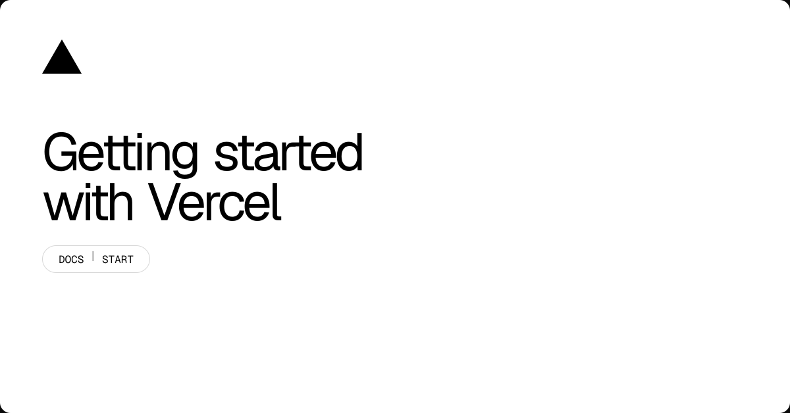
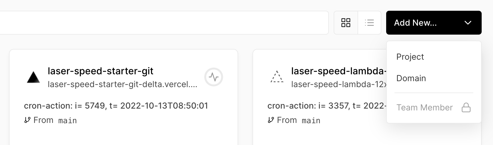
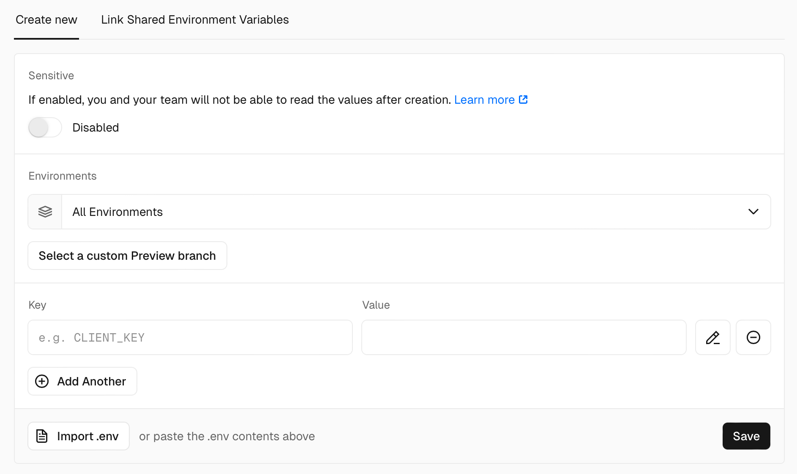
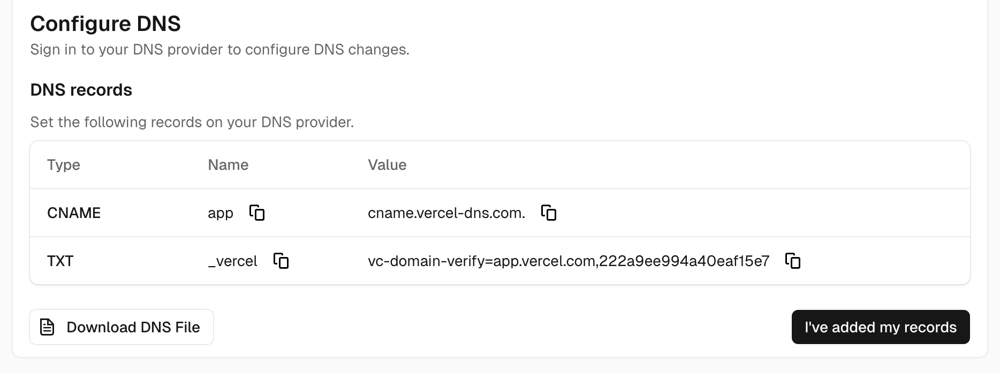

안녕하세요. dev.log입니다.
웹 프로젝트가 로컬에서는 잘 열리는데, 막상 다른 사람에게 보낼 주소가 없다면 배포라는 말부터 어렵게 느껴질 수 있습니다. Vercel은 GitHub 같은 Git 저장소를 연결해 코드를 빌드하고 접속 주소를 만들어 주는 배포 플랫폼입니다. 가장 짧은 시작은 저장소를 가져와 Deploy를 누르고, 생성된 주소를 확인하는 것입니다.
첫 화면에서 설정을 모두 건너뛰면 빌드 경로나 환경 변수에서 바로 막힐 수 있습니다. 이 글은 2026년 8월 10일 Vercel 공식 문서를 바탕으로, 첫 배포에서 볼 항목을 앞뒤 의존 관계에 맞춰 정리했습니다. 특정 계정의 화면을 직접 조작한 사용기는 아니며, 요금제 비교와 프레임워크별 최적화는 다루지 않습니다.

Git 커밋이 배포 URL로 바뀌는 네 단계
Vercel 시작 문서는 Vercel을 웹 앱을 빌드하고 배포하는 도구와 인프라를 제공하는 플랫폼으로 소개합니다. 입문자 관점에서는 Git 커밋을 읽어 빌드한 뒤 고유 URL에 연결하는 서비스로 이해하면 쉽습니다.
배포 흐름은 다음 네 단계입니다.
- GitHub 저장소에서 특정 커밋을 가져옵니다.
- Framework Preset과 빌드 설정에 따라 프로젝트를 빌드합니다.
- 어떤 브랜치에서 온 커밋인지 보고 Preview 또는 Production으로 나눕니다.
- 생성된 결과를
vercel.app주소나 사용자가 연결한 도메인으로 제공합니다.
여기서 Preview는 검토용, Production은 실제 사용자용입니다. 새 프로젝트의 첫 배포만은 예외입니다. Vercel Environments 문서에 따르면 대시보드에서 저장소를 가져올 때 첫 배포는 Production이 됩니다. --prod 없이 CLI를 실행하거나 Production Branch가 아닌 브랜치에서 시작해도 같습니다. 첫 Production이 생긴 뒤부터 작업 브랜치의 수정은 Preview에서 살펴봅니다. Production Branch에 합친 결과는 운영 주소로 보냅니다.
로컬 빌드·앱 폴더·환경 변수부터 확인
Vercel 계정과 GitHub 저장소가 있으면 연결을 시작할 수 있습니다. Deploy를 누르기 전에는 아래 세 가지를 먼저 살펴봅니다.
- 로컬에서 의존성을 설치하고 빌드했을 때 오류가 없어야 합니다.
- 앱이 저장소 최상위가 아니라 하위 폴더에 있다면 그 경로를 알아야 합니다.
- API 키나 데이터베이스 주소가 필요한 앱이라면 변수 이름과 적용 환경을 정리해야 합니다.
로컬 빌드는 Vercel의 필수 절차가 아니라 오류 범위를 나누는 출발점입니다. 여기서부터 실패한다면 프로젝트 자체를 먼저 고쳐야 합니다. 로컬 빌드는 되는데 Vercel에서만 실패할 때는 Root Directory, Build Command, 환경 변수, 런타임 차이를 차례로 좁힙니다.
GitHub 조직 저장소를 연결할 때는 권한도 중요합니다. Vercel의 GitHub 연동 문서에 따르면 개인 계정 저장소에는 소유자 권한이 필요합니다. 조직 저장소라면 조직 소유자이거나, 해당 저장소에 접근할 수 있는 조직 멤버여야 합니다. 목록에 저장소가 없다면 코드를 다시 올리기 전에 GitHub에 설치된 Vercel App의 접근 범위를 먼저 확인합니다.
Add New…에서 첫 vercel.app 주소까지
현재 Vercel 프로젝트 안내에 맞춰 대시보드에서 다음 순서로 진행합니다.
- Vercel에 로그인하고 화면 위쪽의 팀 선택기가 올바른 계정 또는 팀을 가리키는지 확인합니다.
Add New…를 누르고Project를 선택합니다.- Git 제공자 목록에서 GitHub를 연결하고 배포할 저장소의
Import를 누릅니다. Configure Project화면에서 아래 설정을 확인합니다.Deploy를 누르고 빌드가 끝나면 생성된 URL을 엽니다.
아래 공식 문서 화면처럼 Add New… 메뉴 안에서 Project를 고르면 저장소를 가져오는 흐름이 시작됩니다. 메뉴를 열기 전에는 화면의 팀 선택기가 개인 계정인지, 배포하려는 조직인지 먼저 확인하세요. 같은 저장소라도 선택한 팀과 GitHub App 권한에 따라 목록에서 보이지 않을 수 있습니다.

Project를 눌렀는데 저장소가 없다면 새 프로젝트를 빈 상태로 만들기보다 GitHub 연결 범위를 먼저 확인하는 편이 빠릅니다. 저장소가 보인다면 Import 뒤에 나오는 설정 화면으로 넘어갑니다. Vercel 화면의 세부 배치는 바뀔 수 있지만, 저장소 선택 -> 프로젝트 설정 확인 -> Deploy 순서는 같습니다.
Configure Project에서는 모든 값을 바꿀 필요가 없습니다. 자동 감지가 맞는지 아래 표만 확인하면 됩니다.
| 설정 | 확인할 때 | 잘못됐을 때 보이는 문제 |
|---|---|---|
| Framework Preset | 사용한 프레임워크가 자동 선택됐는지 | 알맞지 않은 빌드 명령이나 출력 폴더 사용 |
| Root Directory | 앱이 모노레포나 하위 폴더에 있을 때 | package.json 또는 소스 파일을 찾지 못함 |
| Build and Output Settings | 기본 명령을 바꾼 프로젝트일 때 | 빌드는 끝나도 배포할 결과물을 찾지 못함 |
| Environment Variables | 외부 API·DB·인증 설정이 필요할 때 | 빌드 오류 또는 실행 중 요청 실패 |
배포가 성공하면 프로젝트마다 고유한 vercel.app URL이 생깁니다. 이 주소에서 첫 화면뿐 아니라 새로고침, 주요 링크, API 호출까지 확인해야 합니다. 첫 페이지가 보인다는 사실만으로 전체 앱이 정상이라고 판단하지 않는 편이 안전합니다.
첫 Production 뒤, main은 운영·작업 브랜치는 Preview
첫 Production 배포가 만들어진 뒤에는 브랜치에 따라 환경이 갈립니다. Git 배포 문서에 따르면 Production Branch의 최신 변경은 Production으로 배포됩니다. 다른 브랜치의 푸시와 Pull Request에는 Preview Deployment가 만들어집니다. Production Branch는 대개 main이지만 프로젝트 설정에서 바꿀 수 있습니다.
| Git 또는 CLI에서 한 일 | 배포 결과 | 먼저 확인할 내용 |
|---|---|---|
| 새 프로젝트의 첫 배포 | Production | 첫 URL과 기본 빌드 결과 |
| 첫 배포 뒤 작업 브랜치에 push | Preview | 수정 화면, API 연결, 모바일 레이아웃 |
| 첫 배포 뒤 Pull Request 생성·업데이트 | Preview | 리뷰 대상 커밋과 Preview URL 일치 여부 |
| Production Branch에 merge 또는 push | Production | 운영 도메인, 핵심 사용자 흐름 |
이 구분을 알면 배포를 매번 수동으로 만들 필요가 없습니다. 작업 브랜치에서는 Preview 주소로 검토하고, 문제가 없을 때 main에 합치면 됩니다. 각 배포의 출발점이 궁금할 때는 Vercel 대시보드의 Deployments 탭에서 커밋과 브랜치를 대조합니다.
CLI에서도 첫 배포 예외는 같습니다. 새 프로젝트에서 처음 실행한 vercel은 --prod가 없어도 Production을 만듭니다. 그 첫 Production이 생긴 뒤에는 vercel이 Preview, vercel --prod가 Production 배포를 만듭니다. 처음에는 Git 연동 흐름을 익히고, 자동 배포가 곤란할 때 CLI를 더해도 늦지 않습니다.
환경 변수는 저장 뒤 새 배포까지 필요
API 키처럼 저장소에 올리면 안 되는 값은 프로젝트의 Settings > Environment Variables에서 관리합니다. 환경 변수 문서는 변수를 Production, Preview, Development 등 적용할 환경별로 나눕니다.
Production: 다음 운영 배포에 사용합니다.Preview: 작업 브랜치와 Pull Request의 다음 미리보기 배포에 사용합니다.Development: 로컬 개발용이며vercel env pull로 내려받을 수 있습니다.
공식 문서의 입력 화면을 보면 한 변수에 이름인 Key, 실제 값인 Value, 적용할 Environments를 함께 지정합니다. 먼저 환경을 고른 뒤 값을 저장해야 Preview용 키를 실수로 Production에 넣는 일을 줄일 수 있습니다. 여러 변수가 있다면 하나씩 추가하거나 .env 내용을 가져오는 기능을 사용할 수 있습니다.

비밀값은 Sensitive 옵션도 살펴보세요. 켜면 생성 뒤 값을 다시 읽을 수 없으므로, 원본은 별도의 비밀 관리 수단에 보관해야 합니다. 화면의 항목 이름이나 위치는 바뀔 수 있지만 환경 선택 -> Key와 Value 입력 -> Save -> 새 배포 순서로 확인하면 됩니다.
환경 변수를 저장해도 이미 만들어진 배포는 바뀌지 않습니다. 값을 추가하거나 수정한 뒤에는 새 커밋을 푸시하거나 필요한 배포를 다시 실행해야 합니다. Preview에서만 정상이라면 같은 변수 이름이 Production에도 있는지, 두 값이 각각 올바른지부터 살펴봅니다.
브라우저에 공개할 변수와 서버에서만 쓸 비밀값도 구분해야 합니다. Vercel의 프레임워크 환경 변수 문서는 브라우저 공개 변수에 프레임워크별 접두사를 쓴다고 설명합니다. NEXT_PUBLIC_과 PUBLIC_이 그 예입니다. 비밀키에 공개 접두사를 붙여 해결하지 말고, 해당 프레임워크의 환경 변수 규칙을 따르는 편이 안전합니다.
사용자 도메인은 배포 확인 뒤 연결
첫 배포가 vercel.app 주소에서 정상인지 확인한 다음 사용자 도메인을 연결합니다. 빌드 문제와 DNS 문제를 한꺼번에 만들지 않기 위한 순서입니다.
- 프로젝트를 열고
Settings > Domains로 이동합니다. Add Domain을 눌러example.com또는www.example.com을 입력합니다.- Vercel이 화면에 제시한 DNS 레코드를 도메인의 DNS 관리 화면에 추가합니다.
- Vercel이 설정을 확인하고 도메인 상태를 정상으로 표시할 때까지 기다립니다.
Vercel 도메인 문서에 따르면 루트 주소인 apex 도메인은 A 레코드, www 같은 서브도메인은 CNAME 레코드를 주로 씁니다. 인터넷 글에 적힌 IP나 CNAME을 그대로 복사하지 말고 현재 프로젝트의 Domains 화면이 보여 주는 값을 우선하세요.

Domains 화면에는 위 예시처럼 추가해야 할 레코드의 Type, Name, Value가 표시됩니다. DNS 업체 화면에도 세 값을 같은 조합으로 옮겨야 합니다. 도메인 소유권 확인이 필요하면 TXT 레코드가 함께 나타날 수 있으니 CNAME이나 A 레코드 하나만 보고 화면을 닫지 마세요. 이 이미지는 형식을 설명하기 위한 공식 예시이며, 보이는 샘플 값을 자신의 도메인에 복사해서는 안 됩니다.
DNS를 Cloudflare나 도메인 등록 업체에서 관리한다면 그 업체의 화면에서 레코드를 수정합니다. Vercel의 SSL 문서에 따르면 도메인을 프로젝트에 추가하고 DNS 검증이 성공하면 Vercel이 인증서 생성을 자동으로 시도합니다. apex와 www를 모두 추가했다면 대표 주소 하나를 정하고 다른 주소를 그쪽으로 리디렉션해 중복 주소를 피하는 편이 좋습니다.
레코드를 저장한 뒤 바로 정상으로 바뀌지 않아도 같은 값을 여러 번 추가하지는 마세요. 먼저 DNS 업체의 기존 충돌 레코드를 확인하고, 전파를 기다린 다음 Vercel에서 상태를 다시 확인합니다. 오류가 계속되면 인터넷의 공통 예시가 아니라 현재 프로젝트 화면에 나온 값과 한 글자씩 대조합니다.
막혔을 때 첫 확인 지점
배포 오류를 한 번에 해결하려고 설정을 여러 개 바꾸면 원인을 잃기 쉽습니다. 공식 문서의 전제 조건을 실제 확인 순서로 다시 배열하면 다음과 같습니다.
| 증상 | 첫 확인 지점 | 다음 행동 |
|---|---|---|
| GitHub 저장소가 목록에 없음 | GitHub 계정·조직 역할과 Vercel App 권한 | 해당 저장소 접근을 허용한 뒤 목록 새로 확인 |
| 빌드 중 파일을 찾지 못함 | Root Directory와 저장소 구조 | 앱 폴더를 지정하고 다시 배포 |
| 빌드 명령이 실패함 | Deployment의 Build Logs | 로컬 빌드와 같은 명령·런타임·의존성인지 대조 |
| Preview만 정상이고 Production은 실패 | 환경 변수의 적용 환경과 Production Branch | Production 값을 넣고 새 운영 배포 생성 |
| 도메인이 계속 대기 상태 | Domains 화면의 요구 레코드와 실제 DNS | 오래된 충돌 레코드를 확인하고 전파 뒤 재검증 |
| 새 운영 배포에서 장애 발생 | 직전 정상 Production Deployment | 먼저 롤백하고 로그로 원인 분리 |
운영 배포를 급히 되돌려야 한다면 프로젝트 개요나 Deployments에서 Instant Rollback을 찾습니다. 공식 롤백 문서에 따르면 Hobby에서는 직전 운영 배포로 돌아갈 수 있습니다. 롤백한 빌드에는 이후에 바꾼 환경 변수가 새로 반영되지 않습니다. 외부 데이터베이스나 API 상태도 함께 돌아가지 않으므로 코드 배포 복구와 데이터 복구는 따로 판단해야 합니다.
배포 버튼 전 6문항
처음 배포할 때는 설정 이름을 모두 외우기보다 아래 질문에 답해 보는 편이 빠릅니다.
- 프로젝트가 로컬에서 같은 빌드 명령으로 성공하나요?
- 실제 앱의 시작 폴더가 저장소 루트인가요, 하위 폴더인가요?
- 빌드와 실행에 필요한 환경 변수를 Preview와 Production에 나눠 넣었나요?
- 첫 Production 배포 뒤 운영에 연결할 Production Branch가 의도한 브랜치인가요?
- 작업 브랜치의 Preview URL에서 주요 화면과 API를 확인했나요?
- 사용자 도메인의 DNS 값은 현재 Vercel 화면과 정확히 일치하나요?
가장 현실적인 시작은 작은 프로젝트 하나를 GitHub에 올리고, Add New… > Project에서 가져오는 것입니다. 첫 배포 뒤에는 바로 도메인을 붙이지 말고 Preview와 Production의 차이를 한 번 확인해 보세요. 그다음 환경 변수를 환경별로 나누고, 마지막에 도메인을 연결하면 어디에서 문제가 생겼는지 훨씬 쉽게 찾을 수 있습니다.